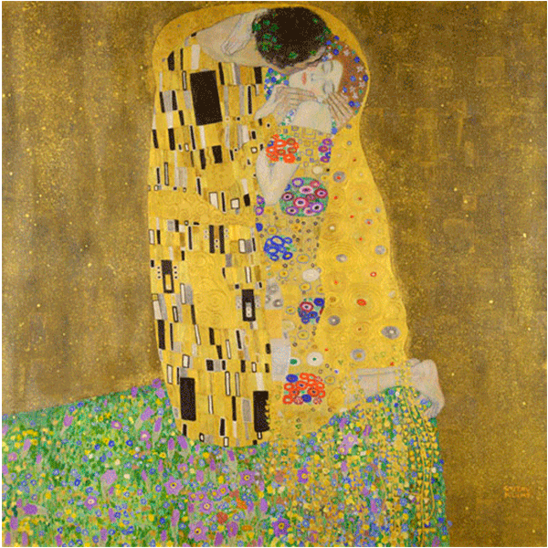
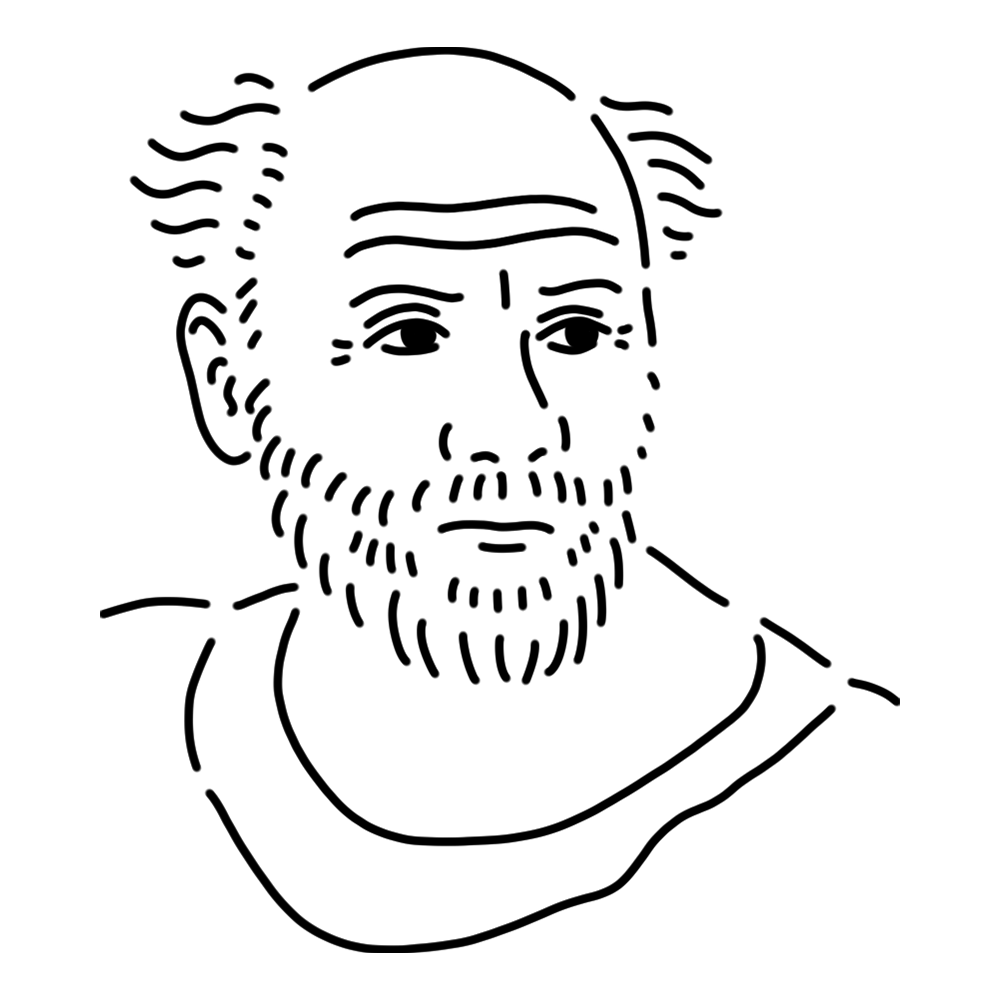

A central figure in the Vienna Secession, she is a muse who loves cats and bling. Her mature personality and interest in romance are intense, but the hint of death lurking beneath her facade also adds depth to her art.
Empire of Austria
"The Kiss"
"Portrait of Adele Bloch-Bauer I"
"Mäda Primavesi" etc.

This masterpiece by Klimt was exhibited at an exhibition and later purchased by the government. The man and woman wrapped in gold robes embracing and kissing are said to be modeled after Klimt and his mistress Emilie, and the image is both extremely sensual and mysterious. It is also rumored that the use of gold leaf in the painting was influenced by the Japanese Rinpa school.
Year
1907 - 1908
Medium
Oil on canvas
Dimension
180cm x 180cm
Collection
Austrian Picture Gallery (Austria)

A leading painter of fin-de-siècle Austria. Originally active as a theater decorator, he later transitioned to painting. In Vienna, he championed a break from classical art and founded the Vienna Secession with fellow artists. He is widely known for his works featuring ornate decorative expressions using gold leaf, female nudes, and depictions of life and death that evoke the fleeting nature of existence in a hauntingly beautiful manner. However, he also produced numerous landscape paintings. He was also famously an avid cat lover, reportedly creating his art surrounded by numerous cats.
Gustav Klimt
July 14, 1862
February 6, 1918(aged 55)